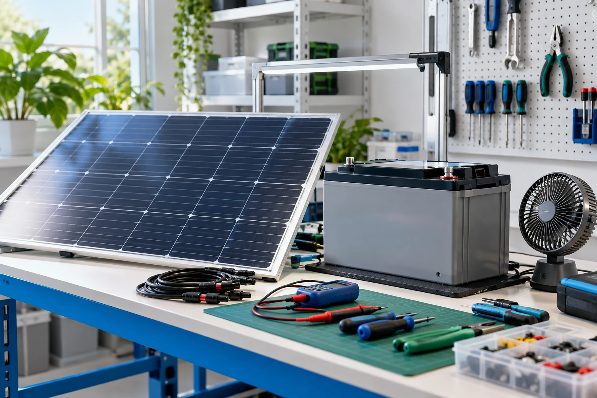

2024–2025
ENGIE Energy Access Bénin
Stagiaire technicien de reconditionnement · Cotonou
- Diagnostic, réparation et remise en état de batteries, ventilateurs et téléviseurs.
- Remise à neuf esthétique, suivi des retours et traçabilité.
- Gestion des pièces, consommables et inventaires ; suivi d’indicateurs.